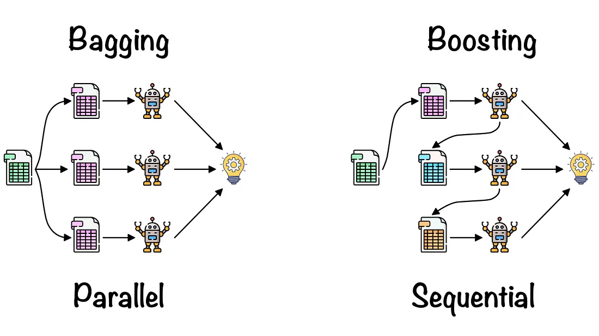

[출처] Ensemble Learning: Bagging & Boosting | by Fernando López | Towards Data Science
Ensemble Learning은..
앙상블 학습(Ensemble learning)은 여러 개의 기본 학습 모델(base learners)을 결합하여 더 강력한 예측 모델을 만드는 머신러닝 방법입니다. 앙상블 학습의 핵심 아이디어는 개별 모델의 예측 결과를 종합하여, 더 나은 예측 성능을 달성하고자 하는 것입니다. 앙상블 학습은 일반적으로 높은 성능과 안정성을 제공하며, 과적합(overfitting)을 방지하는 효과도 있습니다.
앙상블 학습에는 여러 가지 전략이 있으며, 대표적인 방법으로는 다음과 같은 것들이 있습니다:
- 배깅(Bagging, Bootstrap Aggregating): 배깅은 여러 개의 기본 학습 모델을 병렬로 훈련시키고, 그 결과를 평균(회귀) 또는 투표(분류) 방식으로 종합합니다. 학습 데이터셋을 여러 개의 부트스트랩(bootstrap) 샘플로 생성하여 각 모델을 별도로 학습시킵니다. 이를 통해 모델의 분산을 줄이고 과적합을 방지할 수 있습니다. 대표적인 예로 랜덤 포레스트(Random Forest)가 있습니다. Random Forest
- 부스팅(Boosting): 부스팅은 기본 학습 모델을 순차적으로 훈련시키면서, 이전 모델의 오차를 보완하는 방식으로 작동합니다. 각 모델의 가중치를 조절하여, 오차가 큰 데이터 포인트에 더 집중하게 합니다. 이를 통해 모델의 편향을 줄이고 성능을 향상시킬 수 있습니다. 대표적인 예로 에이다부스트(AdaBoost), 그레디언트 부스팅(Gradient Boosting), XGBoost, LightGBM 등이 있습니다. Gradient Boosting
앙상블 학습은 서로 다른 알고리즘 또는 하이퍼파라미터를 사용한 다양한 모델을 결합하여 전체적인 성능을 향상시키는 데에 초점을 맞춥니다. 이러한 접근 방식은 각 모델의 장점을 활용하고, 서로 다른 모델이 가진 단점을 상쇄하여 더 안정적이고 일반화된 예측을 수행할 수 있게 합니다.
앙상블 학습의 몇 가지 주요 이점은 다음과 같습니다:
- 성능 향상: 앙상블 학습은 여러 모델의 예측력을 결합하여 더 높은 성능의 모델을 만듭니다. 이는 각 모델이 가진 지식과 전문성을 종합하고, 다양한 문제 해결 방식을 고려할 수 있기 때문입니다.
- 과적합 방지: 앙상블 학습은 여러 모델을 결합함으로써 과적합을 완화할 수 있습니다. 각 모델은 서로 다른 관점에서 데이터를 학습하므로, 단일 모델이 가진 과적합 문제를 상쇄하는 효과가 있습니다.
- 일반화 능력 향상: 앙상블 학습은 다양한 모델을 통합함으로써 더 일반적인 패턴과 관계를 파악할 수 있습니다. 이로 인해 앙상블 모델은 새로운 데이터에 대한 예측 능력이 향상됩니다.
- 안정성: 앙상블 학습은 여러 모델을 사용하기 때문에, 단일 모델의 결함이나 노이즈에 영향을 받지 않는 안정적인 예측을 수행할 수 있습니다.